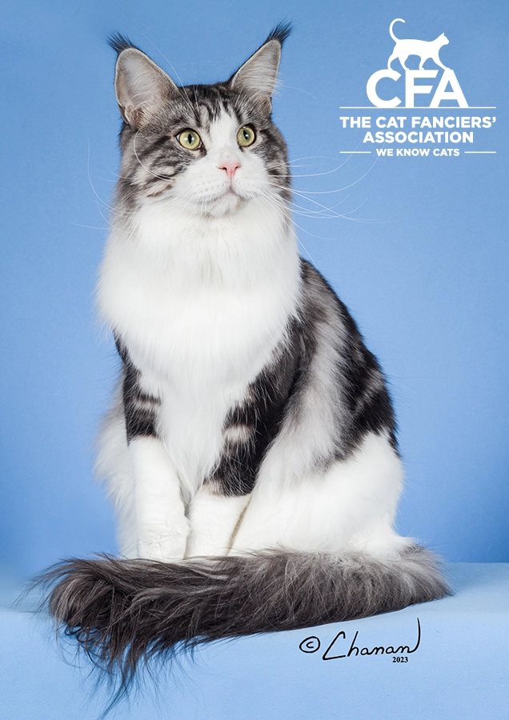
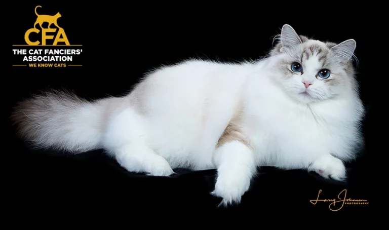
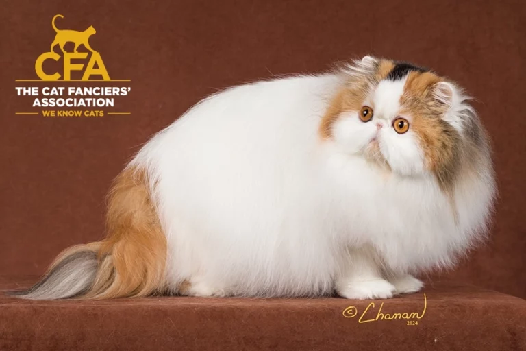
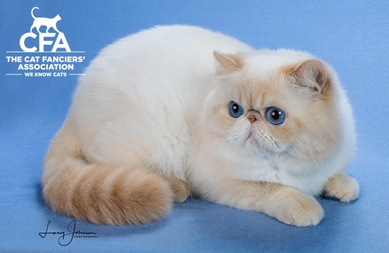
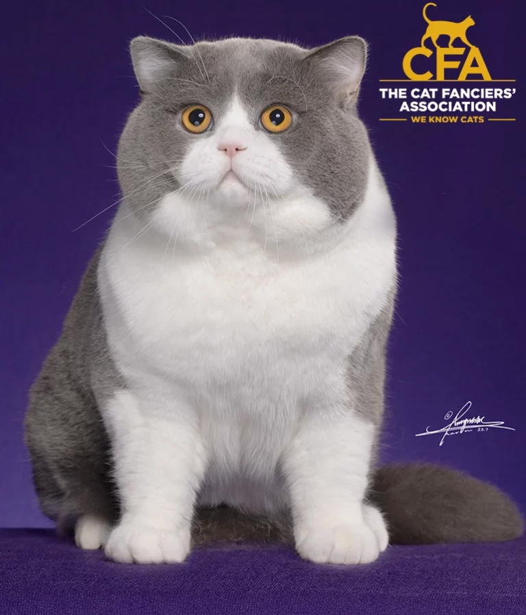
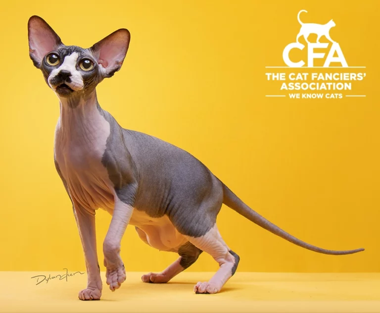

The Maine Coon Cat, crowned as the top pedigreed cat breed for 2025, is adored for its gentle and sociable nature. Known as the “gentle giant” of the cat world, this breed boasts a striking appearance matched by a heartwarming demeanor. Despite their impressive size, Maine Coons are incredibly friendly and approachable, making them ideal companions for families and individuals alike.

The Ragdoll is celebrated for its mesmerizing coat, a hallmark of its lovely persona. This breed’s semi-long fur is silky and luxurious, inviting petting and admiration from all who encounter it. The Ragdoll’s coat, often adorned in striking color points, adds to its visual appeal and enhances its soothing presence. The allure of the Ragdoll’s coat is matched by its affectionate temperament.

The Persian is the epitome of feline royalty, known for its regal demeanor and luxurious coat. This glamorous aristocrat of the cat world captivates with its graceful presence and serene disposition. Its long, flowing fur, combined with its distinctive face, gives the Persian an aura of opulence that is hard to resist. Despite their aristocratic appearance, Persians are quite playful, enjoying short bursts of activity and interactive toys.

The Exotic, affectionately known as the “Plush Teddy Bear” of the feline world, wins hearts with its distinctive face with round, expressive eyes. This breed’s adorable appearance is matched by its sweet and gentle temperament, making it a beloved choice for families and cat enthusiasts alike.

The British Shorthair is the epitome of a loyal and gentle friend, making it a cherished member of many households. Its signature round face and plush coat add to its teddy bear-like charm, inviting affection and admiration from all who meet it. This breed’s loyalty is matched by its intelligence, making it quick to learn routines and adapt to changes. Its gentle presence and steadfast friendship create a sense of comfort and warmth, endearing the British Shorthair to cat lovers worldwide.

The Sphynx is a breed that turns heads and captures hearts with its distinctive lack of fur. This hairless wonder compensates for its absence of a traditional coat with a plethora of charm and personality. Its smooth, suede-like skin feels warm to the touch, offering a unique tactile experience for cat lovers. This breed proves that fur is not essential for feline charisma, as the Sphynx’s vibrant personality and affectionate nature shine through unmistakably.